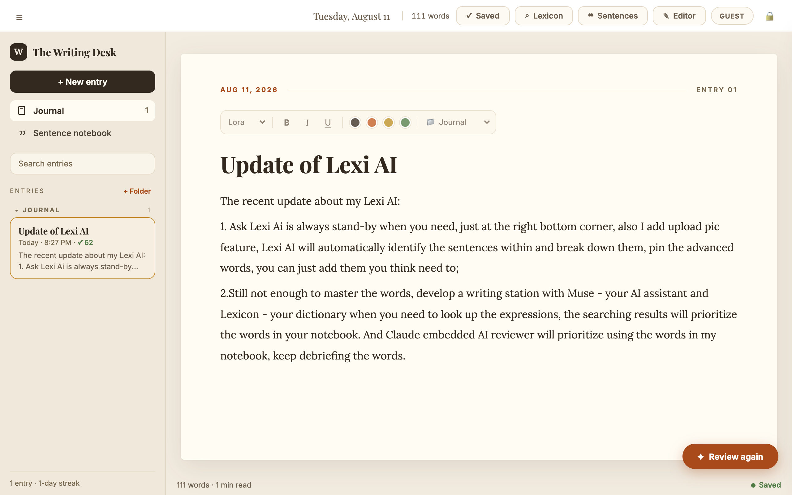
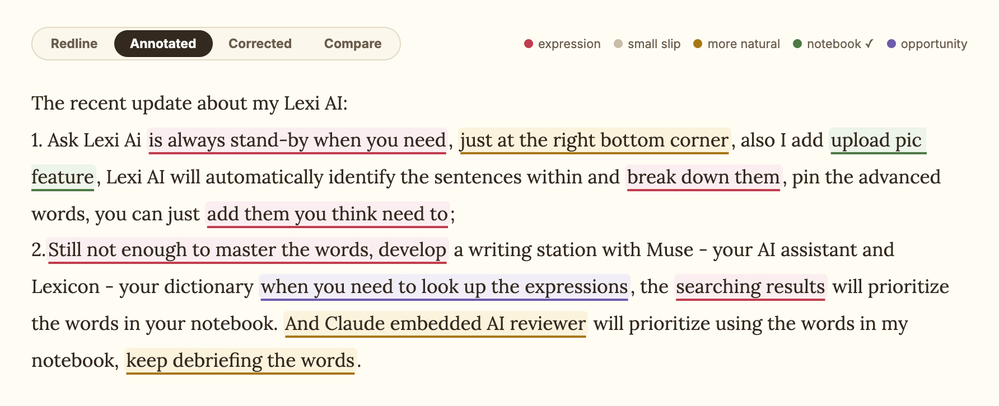
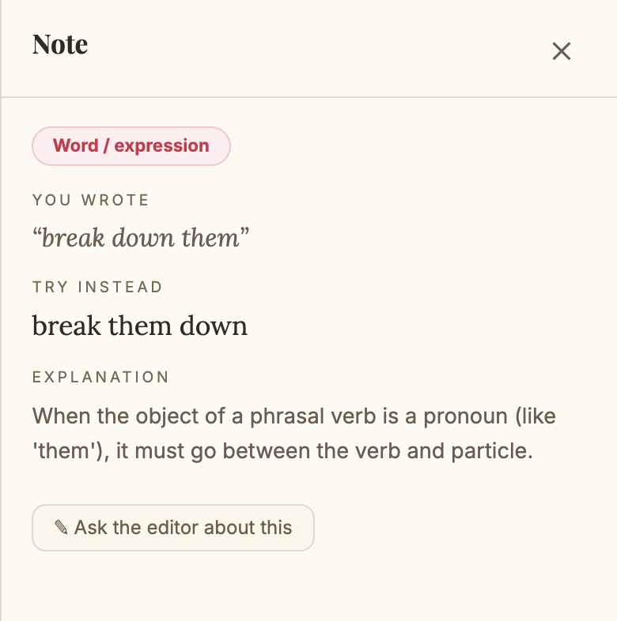
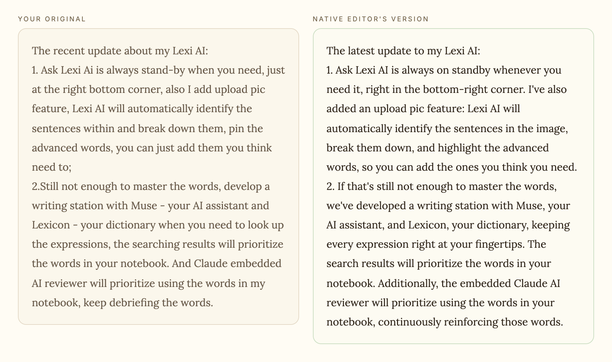
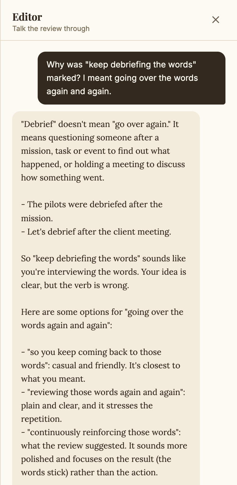
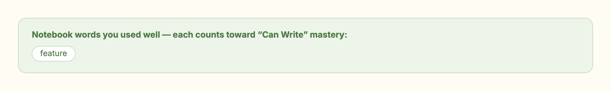
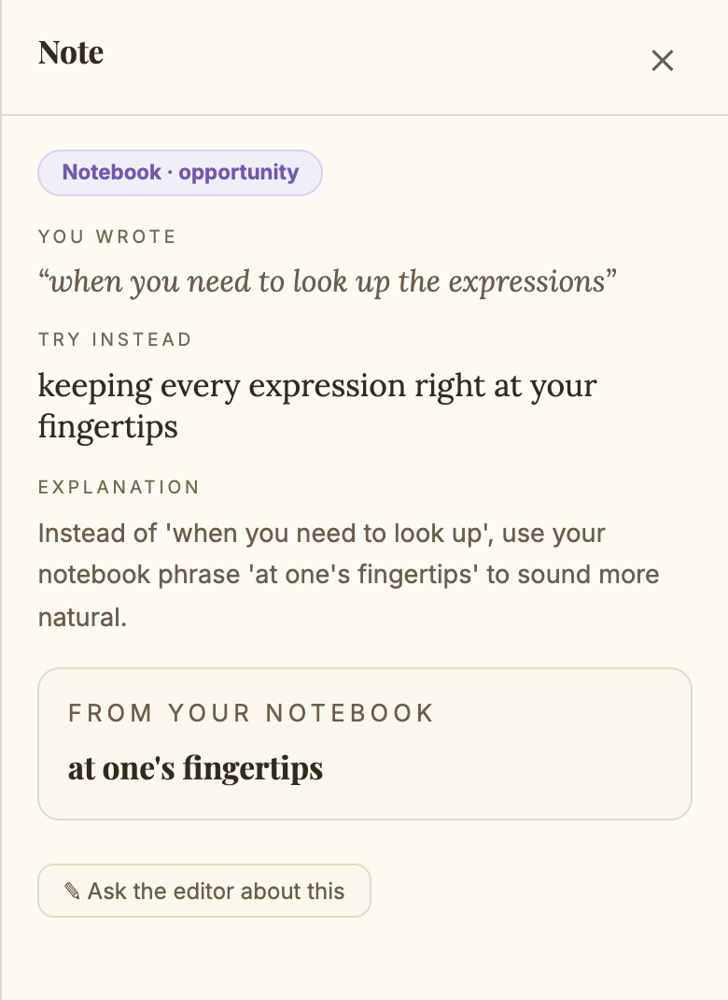

Writing Station
A quiet writing desk with a native-speaker editor for my daily English.
Watch it in 2 minutes
A narrated walkthrough of the real screens, with captions. It starts muted; tap Sound on to hear it.
A calm desk for writing
A sheet of paper on linen, one entry a day, with every entry kept in the journal sidebar and a streak at the bottom.

Reviewed like a native editor
Claude reads the finished entry sentence by sentence and colors every note: red for an error, with why; amber for what a native would say; green for a notebook word used well; violet where a saved word fits.


Corrected, then rewritten like a native
Corrected fixes only the real mistakes and keeps my wording. Compare puts a native rewrite next to my original, written after the review so it never contradicts it.

Ask the editor
The Editor panel is a chat with the editor who wrote the review: I can ask why something was marked, push back, or ask for other ways to say it.

Uses my LexiAI words
Reviews read my LexiAI notebook. A saved word used well counts toward Can Write, and a saved word that would fit gets suggested, the way LexiSpeak does for speaking.

